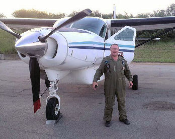
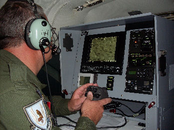
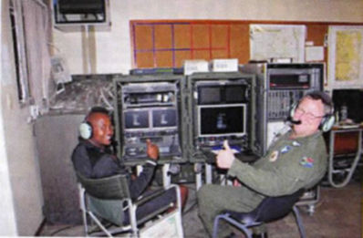
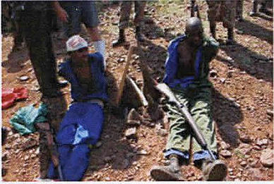
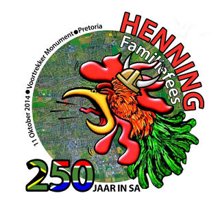

|
Indeks: |
Vrydag 20 Mei 1983 was 'n gewone werksdag vir miljoene Suid-Afrikaners. Om 16:30 uur die middag ontplof 'n kragtige motorbom wat deur ANC terroriste (lede van Umkhonto we Sizwe) gestel is in Kerkstraat, Pretoria, tussen die Poyntonsgebou en die Nedbank-gebou, wat beide militêre hoofkwartiere was. Die bom saai dood en verwoesting onder onskuldige mense (militêr en burgelikes) wat op daardie tydstip besig was om huiswaarts te keer na 'n dag se werk. 19 mense word gedood en 217 beseer.
Die motorbom met 40 kg plofstof is gestel om 16:30 uur op 'n Vrydag af te gaan. Die teiken was die Hoofkwartier van die Suid-Afrikaanse Lugmag. Die hanteerders van die bom, Freddie Shangwe en Ezekial Maseko sterf ook in die ontploffing, omdat dit 10 minute te vroeg afgegaan het. Minstens 20 ambulanse is ingespan om die dooies en beseerdes weg te neem.
a1.b9.c1.d2.e3.f5.g1. Izak Jacobus Henning *1-8-1931 was een van die soldate wat in hierdie bomontploffing sterf. Hy was 'n kommandant in die Suid-Afrikaanse Lugmag en het by die Lugmag Hoofkwartier gewerk.
Olivier Henning, wat die Henning Familiekroniek opgestel het, het self in die SA Weermag gedien, maar kon nooit met Izak se weduwee, Julet Anna (gebore Carstens) of haar twee dogters kontak maak nie. Beide dogters se vanne het mettertyd, weens huwelike, verander, wat dit baie moeilik gemaak het om hulle op te spoor. Gedurende November 2013 maak Olivier egter kontak met Izak se jongste dogter, Chantal Steyn. Sy kon vir ons foto’s van haar pa, ma en oupa en ouma verskaf. Ons kon dus ook hierdie familie se besonderhede in die Familiekroniek opdateer.

Nadat hulle 62 jaar gelede met die eerste oogopslag op mekaar verlief geraak het, het b1.c3.d8.e1.f1.g2. Jan Hendrik Henning *30-4-1929 (oom Jan)(85) en Hermina Elizabeth (gebore Wolfaardt) (tannie Hermien) (78) wat in Club Village, Clubview, Centurion woon, op 6 Februarie 2014 hul 60ste huweliksherdenking gevier.
Hulle het mekaar in 1952 op 'n plaas in Kemptonpark ontmoet, waar hulle gereeld saam gekuier het. Jan het eers Hermien se ouers vir toestemming gevra om haar die hof te maak, want sy was net 15 jaar oud en hy al 22. Met haar ouers se instemming het hy gereeld oor naweke by haar gaan kuier.
Hulle het op haar 16de verjaardag verloof geraak en is twee jaar later op haar 18de verjaardag in die NG Kerk moedergemeente op Kemptonpark getroud.
Jan is een van vier kinders en Hermien is die oudste van nege. "Hulle is wonderlike ouers en grootouers van 'n geslag wat baie deursettingsvermoë getoon het" het Dina Eksteen, hul oudste dogter gesê. Die egpaar is geseën met vier dogters, Dina (55), Marietjie (53), Hermien (51) en Tersia (46). Hulle het ses kleinseuns, Charl (28), Jacques (26), Heinrich (25), Weyers (23), Jan (23), Jamie (12) en een kleindogter, Marelie wat 18 jaar oud is.
Een van haar ouers se hoogtepunte in hul huwelik was om in hul eie huis in te trek, wat hulle na 18 maande van getroude lewe gedoen het. "Hulle het hul kar verkoop om die huis te kon bekostig", het Eksteen bygevoeg.
Die egpaar sê geduld, vertroue en die genade van God het hulle huwelik laat werk. Hulle raad aan jong mense is om saam te groei en kinders en kleinkinders te geniet. Die geboorte van hul kinders en in die besonder die geboorte van hul kleinkinders, was groot hoogtepunte en het baie vreugde verskaf. Ons vier nie Valentynsdag nie, maar glo 'n mens moet mekaar elke dag waardeer, het die egpaar bygevoeg.
b6.c4.d1.e5.f5.g6.h2. Jan Sarel Marthinus Henning (62) was tot en met sy aftrede in 2006 die Adjunk Hoof van die Nasionale Vervolgingsgesag van Suid-Afrika. Hy was een van slegs 'n paar blankes wat nog in so 'n senior posisie in die Staat gedien het. Ongelukkig moes Jan weens mediese redes vroeër aftree as wat hy beplan het.
Onlangs (14 Maart 2014) het 'n interessante artikel oor Jan in die dagblad, Beeld verskyn. Ons publiseer graag uittreksels uit hierdie interessante artikel.
'n Staatsaanklaer hoor die allermooiste stories mits hy sy ore oopmaak. Dit is juis dié voorreg wat adv. Jan Henning(62) laat besluit het om 'n boek te skryf oor gewone mense wat sy pad die afgelope 39 jaar gekruis het. Henning, voormalige adjunkhoof van die nasionale vervolgingsgesag (NVG), is gewikkel in sy grootste stryd tot nog?toe –?een om sy lewe. Brein- en longkanker is 'n tyd gelede by hom gediagnoseer nadat toetse gedoen is toe sy spraak skielik aangetas is en hy woorde nie behoorlik kon formuleer nie.
'n Gewas so groot soos 'n vuurhoutjiedosie druk op die deel in sy brein wat spraak beheer. Henning begin nou met chemoterapie nadat hy twee weke bestraling gekry het om dié swelling te verminder. Breinchirurgie sal te gevaarlik wees. Henning weet nie wat sy toekoms inhou nie, maar hy is rustig daaroor.
"Ek het in 1970 in die vloot begin rook. Ek rook al 43 jaar. Dit help nie om nou te wil ophou nie. Ek bekommer en ontstel my nie hieroor nie. Ek het 'n vol lewe gehad. Daar is by my geen verwyte nie. Ek is trouens baie nuuskierig om te sien wat aan die ander kant aangaan," sê hy met 'n knipoog.
Die nuus dat hy kanker het, het Henning genoop om die boek waaraan hy sowat 'n jaar in sy huis in Lindley in die Vrystaat geskryf het aan 'n uitgewer voor te lê.
"Ek gee nie om wanneer dit gepubliseer word nie, net solank die mooi stories daarin nie verlore gaan nie. Dit is my nalatenskap vir jong aanklaers," sê hy.
Toe Henning in 2006 om gesondheidsredes ná 'n nekoperasie afgetree het, het aanklaers vir dié groot storieverteller 'n skootrekenaar gegee met die opdrag dat hy dit moet gebruik om stories te skryf.
"Die reg was eintlik nog altyd vir my vervelig. Ek onthou iets as iemand vir my 'n interessante storie vertel. Oor die jare as ek lesings aangebied het, het ek stories gebruik om my punt oor te dra," vertel die man wat lid was van die staat se span wat destyds vir die behoud van die doodstraf in die konstitusionele hof baklei het.
Henning het nie sy skootrekenaar gebruik om sy boek te skryf nie, maar soggens 04:30 opgestaan om bladsy vir bladsy met die hand te skryf.
Sy oudste dogter, Hannali Labuschagne, het dit vir hom getik.
"Ek het stories gelees waarvan ons nooit bewus was nie. My pa het ander stories vir ons as kinders vertel," sê Hannali.
Henning sê die "lekkerste tyd" in sy indrukwekkende loopbaan was toe hy aanklaer was in howe van Brits en Kimberley tot Queenstown in die Oos-Kaap.
"Aanklaers het daardie jare 'n brandende passie gehad om die publiek te dien. Ek onthou die era toe gesoute polisiemanne ook in howe moes aankla. Die polisiedossier het toe net uit kort, kriptiese verklarings bestaan en die aanklaer moes spook om die volle verhaal voor die hof te kry."
Henning weet nie of sy passie vir vervolging vandag nog in alle aanklaers brand nie. Hy glo nie. Dit lyk nie so nie. Henning wou nie die NVG se skandes in sy boek oopvlek nie. "My boek bevat geen geheime onthullings nie."
Henning weet presies hoekom pres. Jacob Zuma nie weens beweerde korrupsie vervolg is nie, maar verklap nie dié geheim nie. "Dit is nie interessant nie. Watter verskil gaan dit maak as ek daardie storie vertel," sê-vra Henning.
'n Mens sou dink dat een van Henning se hoogtepunte sy en adv. Gerda Ferreira se suksesvolle vervolging van Tony Yengeni, die ANC se voormalige hoofsweep in die parlement, weens bedrog is. Dit is nie. "Toe ek in 1998 na die toe nuwe NVG bevorder is, was dit bittersoet. Aan die een kant kon ek iets doen om die lot van aanklaers te verbeter."
Henning was altyd 'n kampvegter vir beter werkomstandighede vir aanklaers. As jong aanklaer in Kimberley het hy in 1984 nie geskroom om die haglike omstandighede waarin hulle moes werk onder die destydse minister van justisie se aandag te bring nie.
In sy brief, waarvan hy steeds 'n afskrif het, noem hy verskeie woorde waarmee die aanklaers hul kantore beskryf – pigeonholes en army toilets. Hy sluit dié brief af deur te sê hy het nie 'n foto ingesluit van die ma's wat in die hofgange borsvoed nie, maar dat dit op versoek beskikbaar is.
"Ek was altyd lief daarvoor om ander kwaad te maak en 'n bietjie te terg. Die jare by die NVG se hoofkantoor was daarom vir my sleg, want dit het my uit die howe uitgehaal waar ek elke dag met gewone mense kon werk en hul stories kon hoor."
In sy boek skryf Henning hy was nie altyd 'n rolmodel vir aanklaers nie. "In uitsonderlike situasies was my emosies nie bestand teen die buffer nie. Die slagoffers se pyn het dan ook myne geword," lui sy boek.

Die van Henning kom redelik algemeen in Europa voor — veral in lande soos Duitsland, Nederland, Denemarke, Swede, Noorweë, Estonia, Latvia, Pole, België en Frankryk vind ons Henning's. Ons is ook bewus van Henning’s in Brittanje, Australië, Ontario (Kanada) en die VSA en dan natuurlik Suid-Amerikaanse state soos Argentinië en Venezuela. Ons het nou van 'n Henning familie in Vancouver, Kanada verneem.
In Vancouver, Kanada is daar 'n Henning Gold Mines Inc. maatskappy wat fokus op eksplorasiewerk en die myn van goud in die Brits Colombia provinsie van Kanada. Die maatskappy is gestig deur 'n Bernhard (Bud) Henning *1912 wat met verloop van jare verskeie aangrensende stukke grond met 'n oppervlakte van meer as 8 000 hektaar in die Cariboo distrik opgekoop het. Aanvanklik het hy gekonsentreer op die ontginning van water, olie en gas, maar het gedurende die 1970’s die nodige goud en minerale konsessies verkry om vir goud en ander minerale te soek. Dit het spoedig duidelik geword dat die Cariboo distrik die grootste konsentrasies van goudneerslae in Kanada het. Bud Henning het hard en onverpoos gewerk om vir sy gesin 'n gerieflike en gelukkige lewe te verseker.
Na sy onverwagte dood in 2002, na 'n beroerte-aanval en daarna 'n hart-aanval het sy dogter, Nadine en kleinseun, Paul die besigheid oorgeneem. Vandag is Henning Gold Mines Inc leiers in die goudmynbedryf in Kanada.

Baie geluk Amri! Al die Hennings is trots op jou.
Ons het in Haantjies no 101 van Februarie 2010 en 108 van November 2011 berig oor pa Pieter se prestasies op landbou-gebied.

b1.c3.d5.e9.f1.g1. Jacobus Stephanus (Cobus) Henning van Bloemfontein het vir ons laat weet dat sy ma, Mara Anna Hattingh *29-12-1948 op 26 Februarie 2014 oorlede is. Sy was getroud met Cobus se pa, Jacobus Stephanus Henning *6-11-1947, maar hulle is gedurende 1977 geskei. Daarna is sy met 'n Hattingh getroud. Sy het na 'n hartaanval gesterf.
img src="line.gif" height="26" width="549">
Ds Bjarne Fowels van Hjelmeland, Noorweë (74) is sekerlik een van ons familiebondlede wat die meeste moeite doen om beriggies wat interessant vir ons Hennings sal wees, uit te snuffel. In hierdie beriggie vertel hy van 'n geneesheer in Noorweë wat amper dieselfde naam as ons Bondsekretaris het.
When reading the Norwegian Medical doctor's magazine with the long name:
"Tidsskrift for Den norske legeforening", I came across an article about Epilepsy Related Psychosis. The article was written by Oliver Henning! No wonder I nearly fell of my bike when I noticed the name!
He proved to be chief physician, specialist in nevology and psychiatry, and specialist in epileptology. Born 1965.
I contacted him by mail. From his reply I got to know he is working in Oslo and of German descent. He knew nothing about his family, except that he had heard they came from North Germany. He would try to find out more. I will keep you informed.
He signs his mail: Oliver Johannes Henning. Interesting, isn't it?

Baie dankie aan Jan Andries Henning van Leraatsfontein, Witbank, Jan Hendrik Henning van Glenstantia, Pretoria en Past Antonie Henning van Rietfontein, Pretoria wat voortgaan om maandeliks met 'n debietorder bydraes te lewer. Dit wys mens net dat met 'n klein bedraggie maandeliks, wat jy later amper nie meer voel nie, jy 'n baie groter rol in die finansies van die Familiebond speel as met een groot bydrae jaarliks. Omdat u self u debietorder instel, het uself volle beheer oor die transaksie. U besluit self wanneer u die bedrag kan verhoog, of verlaag, of staak.
Baie dankie ook aan almal wat oor die afgelope drie maande bydraes gelewer het. U bydrae, hoe klein ookal, word werklik waardeer en dra by tot die voortbestaan van die Familiebond. Ons vermeld graag die name van diegene wat ruim bygedra het:
C B (Neels) Henning en sy vrou Bernice van Tampa, Florida in die VSA - $l;100.00 omgesit in Rand, na bankkostes R944.00
P H (Piet) Henning en sy vrou Deirdré, voorheen van Strand, maar deesdae tydelik in die buiteland – R700.00
Dr MEJ (Tjol) Henning en sy vrou, Amanda van Lyttelton, Centurion — R500.00
Stanley Henning en sy vrou Mary-Ann van Dowerglenn, Edenvale – R500.00
M C (Marthinus) Henning en sy vrou Henesia van Welkom – R350.00
JSM (Jan) Henning en sy vrou Marieta van Lyttelton-Manor, Centurion — R300.00
G S (Gerhard) Henning en sy vrou Deirdré van Royldene, Kimberley – R300.00
G T (Gerhard) Henning en sy vrou Vanessa van Royldene, Kimberley – R300.00
P B (Pieter) Henning en sy vrou Hannetjie van Sinoville, Pretoria – R300.00
J A (Jan) Henning en sy vrou Engela van Frankfort – R300.00
Iemand het op 28 Januarie 2014 'n bedrag van R300 in die Familiebond se bankrekening gedeponeer sonder om sy/haar naam te verstrek.
Dan het die familiebond se ou vriende in Duitsland – Herbert en Margita Henning van München, Duitsland 'n ruim bydrae van R3 000.00 gemaak. Die 82-jarige Herbert oorweeg dit om in Oktober 2014 spesiaal na Suid-Afrika te kom, om die familiefees van 11 Oktober 2014 by te woon.

Die skokkende renosterstropery wat veral in Suid-Afrika plaasvind is 'n groot bron van kommer vir alle verantwoordelike burgers. En as mens na die syfers van renosters wat gestroop word, wat van tyd tot tyd bekendgemaak word, luister, klink dit amper asof ons hierdie stryd verloor.
Die owerhede probeer egter hul bes om hierdie misdaad te bekamp. In die Krugerwildtuin is daar onlangs selfs 'n oud weermag generaal aangestel om die bekampingsaksies te koördineer. Die Suid-Afrikaanse Lugmag word ook ingespan om vanuit die lug die misdadigers, wat in die nag vanuit ons buurlande op die Wildtuin toesak, op te spoor.
b7.c8.d8.e1.f2.g3. Adjudant-Offisier klas 1 Alexander (Xander) Henning (50) is een van die manne wat onverpoos op hierdie misdadigers se spoor is. Xander was vir baie jare 'n lugfotograaf by Lugmagbasis Bloemspruit, in Bloemfontein. Hy het egter uit die lugmag bedank, maar dien steeds in die Reserwemag. Hy word nou sedert Februarie 2012 amper op 'n voltydse basis opgeroep om as lugfotograaf in die bekamping teen renoster-stropery, asook grenspatrollies op die Botswana, Zimbabwe, Mosambiek, Swaziland en Lesotho grense diens te verrig.
|

AO1 Xander Henning by die Cessna C208 Caravan waarmee hulle vlieg
|

Xander by die beheerpos van die kamerasiteem binne die vliegtuig, waar die eerste beelde van renosterstropers waargeneem word
|

Die beheerkamer op die grond, waar dieselfde beelde as in die vliegtuig waargeneem kan word
|
|
Xander by die Argoss Kamerasisteem wat onder die vliegtuig gemonteer is
|

Twee van die renosterstropers uit Mosambiek, wat deur AO1 Alexander Henning en sy span opgespoor en daarna deur die grondmagte vasgetrek is.
|
Vir die renosterstropery is hy aanvanklik opgeroep om vanaf Lugmagbasis Hoedspruit te opereer, maar hulle is tans gestasioneer by Sandrivier Militêre Basis in die Krugerwildtuin. Hulle woon in tente, karavane en A-raam hutte in die bos en word meestal in die nag, met volmaan aangewend. Die stropers slaan meestal in die nag met volmaan toe en vlug daarna vinnig terug oor die grens.
Die Lugmag patrollies vlieg met Cessna C208 Caravan vliegtuie wat met Argoss kamerasisteme toegerus is. Hierdie kamera is ook verbind met 'n grondstasie in die omgewing. Die manne wat die grondstasie beman, kan dus presies alles sien wat Xander en sy manne bo vanaf die vliegtuig sien.
Die Argoss Kamerasisteem op die vliegtuie het 'n videokamera wat in die dag gebruik word en 'n TIS (Termiese Beeldsensor) sisteem wat in die nag gebruik word. Die TIS kamera is baie sensitief en sien alle bewegings van die stropers blitsvinnig in die nag. Die kamera het ook 'n laser vermoë waarmee die presiese posisie of ko-ordinate waar die stropers hulle bevind blitsvinnig aan die beheersentrum op die grond oorgedra word. Dit stel die grondmagte in staat om blitsvinnig toe te slaan.
Die hele Krugerwildtuin word deur hierdie lugspanne gedek en hulle vlieg duisende kilometers. Wanneer Xander en sy kollegas stropers op die grond gewaar, word 'n film gemaak en hulle bly in die gebied totdat die grondmagte of helikopters arriveer.
Xander sê dat hy in die elf keer wat hy ontplooi is, al 273 vliegure agter die rug het. Hy het elke oomblik daarvan geniet.

Laat weet asseblief al u familie om die groot Henning fees by die Voortrekkermonument by te woon. Kom en geniet die dag saam met ons en versterk die trots in u familienaam. Bring u eie piekniekmandjie saam. Ons sal in die volgende Nuusbrief volledig vertel wat dié dag gaan gebeur.
